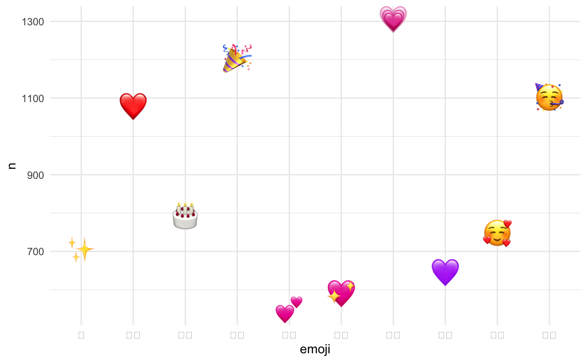
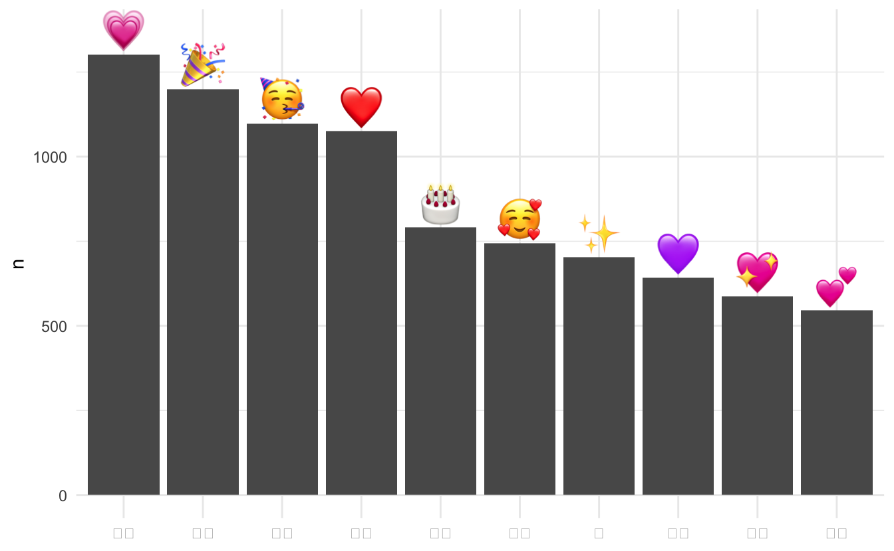
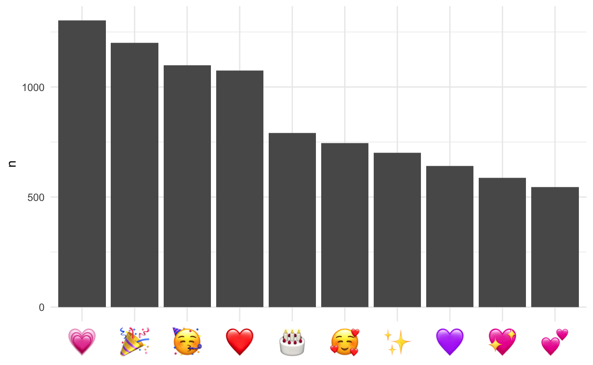
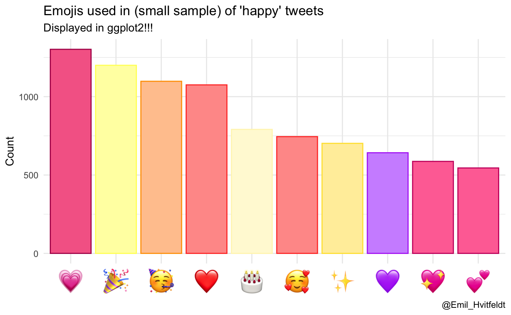

Emojis are now fully supported in {ggplot2} thanks to the {ragg} package. Read more about it here: Modern Text Features in R.
I have been trying to use Emojis for a long time. It was part of my very first post on this blog. Others have made progress such as with emojifont, but it is not using the classical Apple Color Emoji font which is the most commonly recognized. I made a breakthrough when I was writing the packagecalander entry on ggtext. While the method is the best I have found it does have some cons.
Pros:
- Works
- Doesn’t require the use of SVG
- Previews nicely
Cons:
- Relies on experimental package ggtext
- Needs web scraping
- Required access to the internet to render
- Size can’t be adjusted using the size aesthetic
All in all, it is a fair trade for my needs.
Packages 📦
We load the essential packages to wrangle, collect data (we will use tweets), scrape websites, and handle emojis.
library(tidyverse)
library(rtweet)
library(rvest)
# devtools::install_github("clauswilke/ggtext")
library(ggtext)
library(emo)Getting the tweets 🐦
For a simple dataset where we find emojis I’m going to get some tweets with the word “happy”.
happy <- search_tweets("happy", include_rts = FALSE, n = 1000)we can use the ji_extract_all() function from the emo package. This will give us a list of emojis so we can use the unnest() function to get back to a tidy format. I’m going to do a simple count() of the emojis for the following visualizations.
happy_emojis <- happy %>%
mutate(emoji = emo::ji_extract_all(text)) %>%
unnest(cols = c(emoji)) %>%
count(emoji, sort = TRUE)Next is where the magic happens. We don’t have a way to displays emojis in ggplot2, but we can use ggtext to embed images into the text using HTML. Now we just need to get an image of each emoji. The following function will accept an emoji as a string and return the URL to a .png of that emoji.
emoji_to_link <- function(x) {
paste0("https://emojipedia.org/emoji/",x) %>%
read_html() %>%
html_nodes("tr td a") %>%
.[1] %>%
html_attr("href") %>%
paste0("https://emojipedia.org/", .) %>%
read_html() %>%
html_node('div[class="vendor-image"] img') %>%
html_attr("src")
}Then this function will take that URL and construct the necessary HTML code to show the emoji PNGs.
link_to_img <- function(x, size = 25) {
paste0("<img src='", x, "' width='", size, "'/>")
}To be courteous we are only going to scrape the emojis we are going to use. So we will slice() the 10 most frequent emojis. We will also be adding a 5 second delay using slowly() and rate_delay() from purrr.
top_happy <- happy_emojis %>%
slice(1:10) %>%
mutate(url = map_chr(emoji, slowly(~emoji_to_link(.x), rate_delay(1))),
label = link_to_img(url))emoji-scatter plot 📈
Now we can use the geom_richtext() function from ggtext to create a emoji scatter chart.
top_happy %>%
ggplot(aes(emoji, n, label = label)) +
geom_richtext(aes(y = n), fill = NA, label.color = NA, # remove background and outline
label.padding = grid::unit(rep(0, 4), "pt") # remove padding
) +
theme_minimal()
This is a little off, so let’s other these by counts and put them over a bar chart. I’m also going to the x-axis ticks and text.
offset <- max(top_happy$n) / 20
top_happy %>%
ggplot(aes(fct_reorder(emoji, n, .desc = TRUE), n, label = label)) +
geom_col() +
geom_richtext(aes(y = n + offset), fill = NA, label.color = NA,
label.padding = grid::unit(rep(0, 4), "pt")
) +
theme(axis.ticks.x = element_blank(),
axis.text.x = element_blank()) +
labs(x = NULL) +
theme_minimal()
Emojis in labels and text 📊
We are not only limited to using emojis in the geoms. We can set the text element using emojis to element_markdown(). Below we have the same bar chart as above but with the emoji as labels below instead of on top.
top_happy %>%
ggplot(aes(fct_reorder(label, n, .desc = TRUE), n)) +
geom_col() +
theme_minimal() +
theme(axis.text.x = element_markdown()) +
labs(x = NULL)
Adding a splash of color 🌈
We can employ a little more scraping and color calculations to had colors to the bars according to the colors of the emoji. The following function takes a URL to a .png file and returns the most common color that isn’t purely black or pure white.
mean_emoji_color <- function(x) {
data <- png::readPNG(RCurl::getURLContent(x))
color_freq <- names(sort(table(rgb(data[,,1], data[,,2], data[,,3])),
decreasing = TRUE))
setdiff(color_freq, c("#FFFFFF", "#000000"))[1]
}We apply this to all the emoji URLs and color the bars accordingly.
plot_data <- top_happy %>%
mutate(color = map_chr(url, slowly(~mean_emoji_color(.x), rate_delay(1))))
plot_data %>%
ggplot(aes(fct_reorder(label, n, .desc = TRUE),
color = color,
fill = unclass(prismatic::clr_lighten(color, 0.4)), n)) +
geom_col() +
scale_fill_identity() +
scale_color_identity() +
theme_minimal() +
theme(axis.text.x = element_markdown()) +
labs(x = NULL, y = "Count",
title = "Emojis used in (small sample) of 'happy' tweets",
subtitle = "Displayed in ggplot2!!!",
caption = "@Emil_Hvitfeldt")
Final note 🗒
If you want to use emojis in the text you need to call theme_*() before theme() such that element_markdown() isn’t being overwritten.
current session info
─ Session info ───────────────────────────────────────────────────────────────
setting value
version R version 4.1.0 (2021-05-18)
os macOS Big Sur 10.16
system x86_64, darwin17.0
ui X11
language (EN)
collate en_US.UTF-8
ctype en_US.UTF-8
tz America/Los_Angeles
date 2021-07-16
─ Packages ───────────────────────────────────────────────────────────────────
package * version date lib source
askpass 1.1 2019-01-13 [1] CRAN (R 4.1.0)
assertthat 0.2.1 2019-03-21 [1] CRAN (R 4.1.0)
backports 1.2.1 2020-12-09 [1] CRAN (R 4.1.0)
bitops 1.0-7 2021-04-24 [1] CRAN (R 4.1.0)
blogdown 1.3.2 2021-06-09 [1] Github (rstudio/blogdown@00a2090)
bookdown 0.22 2021-04-22 [1] CRAN (R 4.1.0)
broom 0.7.8 2021-06-24 [1] CRAN (R 4.1.0)
bslib 0.2.5.1 2021-05-18 [1] CRAN (R 4.1.0)
cellranger 1.1.0 2016-07-27 [1] CRAN (R 4.1.0)
cli 3.0.0 2021-06-30 [1] CRAN (R 4.1.0)
clipr 0.7.1 2020-10-08 [1] CRAN (R 4.1.0)
codetools 0.2-18 2020-11-04 [1] CRAN (R 4.1.0)
colorspace 2.0-2 2021-06-24 [1] CRAN (R 4.1.0)
crayon 1.4.1 2021-02-08 [1] CRAN (R 4.1.0)
curl 4.3.2 2021-06-23 [1] CRAN (R 4.1.0)
DBI 1.1.1 2021-01-15 [1] CRAN (R 4.1.0)
dbplyr 2.1.1 2021-04-06 [1] CRAN (R 4.1.0)
desc 1.3.0 2021-03-05 [1] CRAN (R 4.1.0)
details * 0.2.1 2020-01-12 [1] CRAN (R 4.1.0)
digest 0.6.27 2020-10-24 [1] CRAN (R 4.1.0)
dplyr * 1.0.7 2021-06-18 [1] CRAN (R 4.1.0)
ellipsis 0.3.2 2021-04-29 [1] CRAN (R 4.1.0)
emo * 0.0.0.9000 2021-07-17 [1] Github (hadley/emo@3f03b11)
evaluate 0.14 2019-05-28 [1] CRAN (R 4.1.0)
fansi 0.5.0 2021-05-25 [1] CRAN (R 4.1.0)
farver 2.1.0 2021-02-28 [1] CRAN (R 4.1.0)
forcats * 0.5.1 2021-01-27 [1] CRAN (R 4.1.0)
fs 1.5.0 2020-07-31 [1] CRAN (R 4.1.0)
generics 0.1.0 2020-10-31 [1] CRAN (R 4.1.0)
ggplot2 * 3.3.5 2021-06-25 [1] CRAN (R 4.1.0)
ggtext * 0.1.1 2020-12-17 [1] CRAN (R 4.1.0)
glue 1.4.2 2020-08-27 [1] CRAN (R 4.1.0)
gridtext 0.1.4 2020-12-10 [1] CRAN (R 4.1.0)
gtable 0.3.0 2019-03-25 [1] CRAN (R 4.1.0)
haven 2.4.1 2021-04-23 [1] CRAN (R 4.1.0)
highr 0.9 2021-04-16 [1] CRAN (R 4.1.0)
hms 1.1.0 2021-05-17 [1] CRAN (R 4.1.0)
htmltools 0.5.1.1 2021-01-22 [1] CRAN (R 4.1.0)
httr 1.4.2 2020-07-20 [1] CRAN (R 4.1.0)
jquerylib 0.1.4 2021-04-26 [1] CRAN (R 4.1.0)
jsonlite 1.7.2 2020-12-09 [1] CRAN (R 4.1.0)
knitr * 1.33 2021-04-24 [1] CRAN (R 4.1.0)
labeling 0.4.2 2020-10-20 [1] CRAN (R 4.1.0)
lifecycle 1.0.0 2021-02-15 [1] CRAN (R 4.1.0)
lubridate 1.7.10 2021-02-26 [1] CRAN (R 4.1.0)
magrittr 2.0.1 2020-11-17 [1] CRAN (R 4.1.0)
markdown 1.1 2019-08-07 [1] CRAN (R 4.1.0)
modelr 0.1.8 2020-05-19 [1] CRAN (R 4.1.0)
munsell 0.5.0 2018-06-12 [1] CRAN (R 4.1.0)
openssl 1.4.4 2021-04-30 [1] CRAN (R 4.1.0)
pillar 1.6.1 2021-05-16 [1] CRAN (R 4.1.0)
pkgconfig 2.0.3 2019-09-22 [1] CRAN (R 4.1.0)
png 0.1-7 2013-12-03 [1] CRAN (R 4.1.0)
prettyunits 1.1.1 2020-01-24 [1] CRAN (R 4.1.0)
prismatic 1.0.0 2021-01-05 [1] CRAN (R 4.1.0)
progress 1.2.2 2019-05-16 [1] CRAN (R 4.1.0)
purrr * 0.3.4 2020-04-17 [1] CRAN (R 4.1.0)
R6 2.5.0 2020-10-28 [1] CRAN (R 4.1.0)
Rcpp 1.0.7 2021-07-07 [1] CRAN (R 4.1.0)
RCurl 1.98-1.3 2021-03-16 [1] CRAN (R 4.1.0)
readr * 1.4.0 2020-10-05 [1] CRAN (R 4.1.0)
readxl 1.3.1 2019-03-13 [1] CRAN (R 4.1.0)
reprex 2.0.0 2021-04-02 [1] CRAN (R 4.1.0)
rlang 0.4.11 2021-04-30 [1] CRAN (R 4.1.0)
rmarkdown 2.9 2021-06-15 [1] CRAN (R 4.1.0)
rprojroot 2.0.2 2020-11-15 [1] CRAN (R 4.1.0)
rstudioapi 0.13 2020-11-12 [1] CRAN (R 4.1.0)
rtweet * 0.7.0 2020-01-08 [1] CRAN (R 4.1.0)
rvest * 1.0.0 2021-03-09 [1] CRAN (R 4.1.0)
sass 0.4.0 2021-05-12 [1] CRAN (R 4.1.0)
scales 1.1.1 2020-05-11 [1] CRAN (R 4.1.0)
selectr 0.4-2 2019-11-20 [1] CRAN (R 4.1.0)
sessioninfo 1.1.1 2018-11-05 [1] CRAN (R 4.1.0)
stringi 1.6.2 2021-05-17 [1] CRAN (R 4.1.0)
stringr * 1.4.0 2019-02-10 [1] CRAN (R 4.1.0)
tibble * 3.1.2 2021-05-16 [1] CRAN (R 4.1.0)
tidyr * 1.1.3 2021-03-03 [1] CRAN (R 4.1.0)
tidyselect 1.1.1 2021-04-30 [1] CRAN (R 4.1.0)
tidyverse * 1.3.1 2021-04-15 [1] CRAN (R 4.1.0)
utf8 1.2.1 2021-03-12 [1] CRAN (R 4.1.0)
vctrs 0.3.8 2021-04-29 [1] CRAN (R 4.1.0)
withr 2.4.2 2021-04-18 [1] CRAN (R 4.1.0)
xfun 0.24 2021-06-15 [1] CRAN (R 4.1.0)
xml2 1.3.2 2020-04-23 [1] CRAN (R 4.1.0)
yaml 2.2.1 2020-02-01 [1] CRAN (R 4.1.0)
[1] /Library/Frameworks/R.framework/Versions/4.1/Resources/library